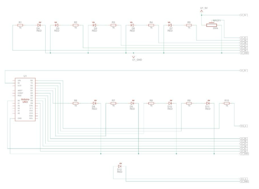
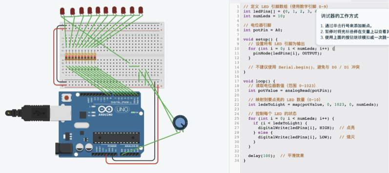

After attending Emilie Giles’ Wearables Hackathon, I gained a deeper understanding of soft circuits and e-textiles in wearable technology. The workshop not only introduced me to materials like conductive thread, sewn circuits, and wearable microcontrollers but, more importantly, made me realize the interesting connection that can be built between traditional craftsmanship and digital interaction.
Inspired by the course, I attempted to create a sewable sequential LED project. The project uses conductive thread to connect multiple LEDs for sequential lighting, with the circuit sewn onto fabric retaining both functionality and the aesthetic of hand-stitching. Through programming, I controlled the LEDs to light up one after another, simulating a rhythm and flow of light.
During the production process, I learned how to plan circuit routing, avoid short circuits, and use needles and threads to create a reliable soft circuit. I also paid special attention to the directionality of LED installation and the impact of pin spacing on current conduction.
These are the diagram I drawn:


Reflection
This project has made me deeply realize that wearable technology is not just a technical implementation, but also a medium that combines physical perception, interactive experience, and creative design. I’m eager to apply such technologies to more future projects with emotional interaction, such as light-responsive clothing or body-movement-driven accessories.